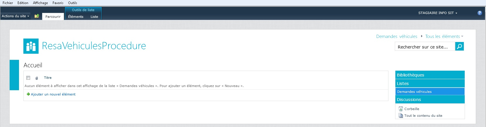
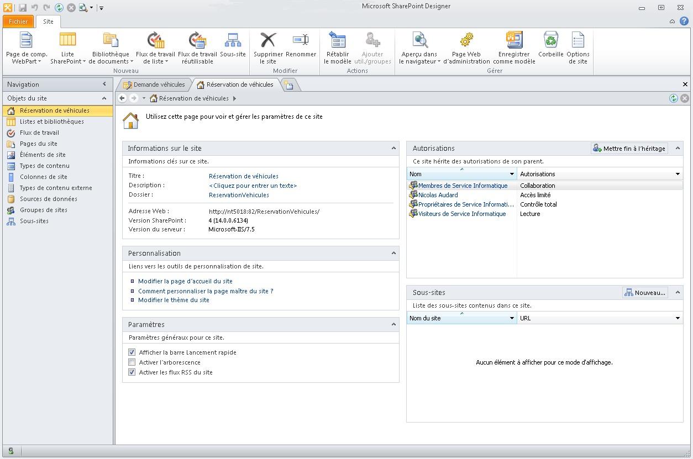
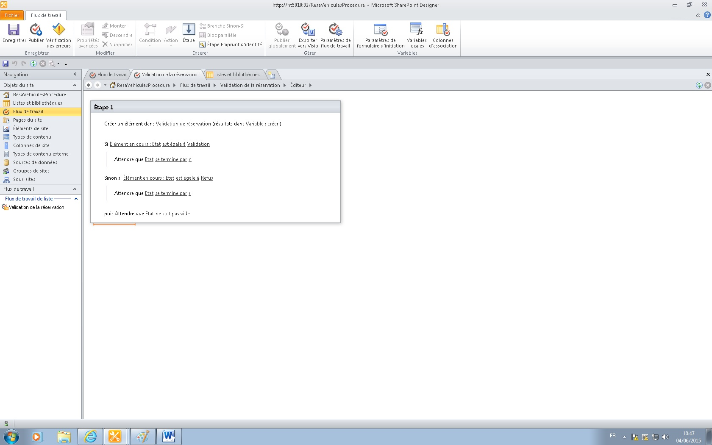
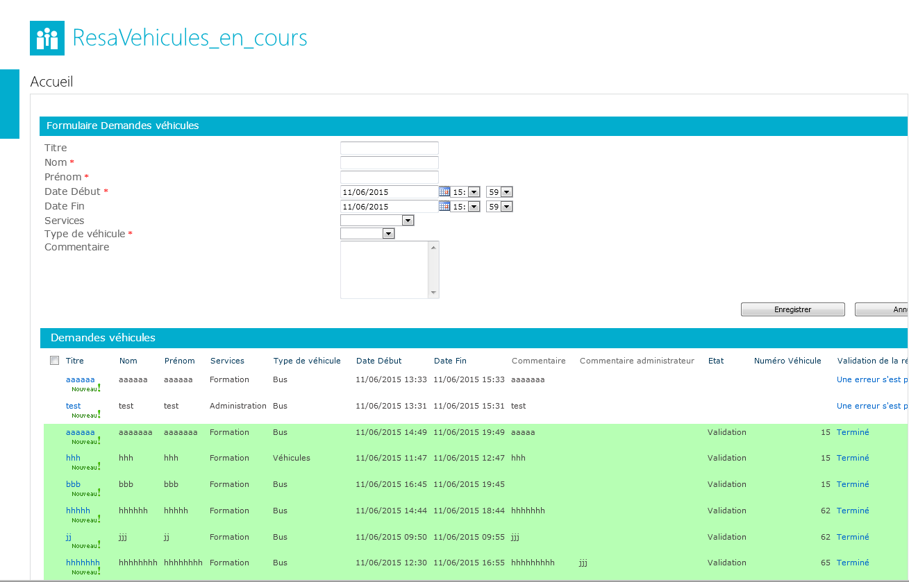
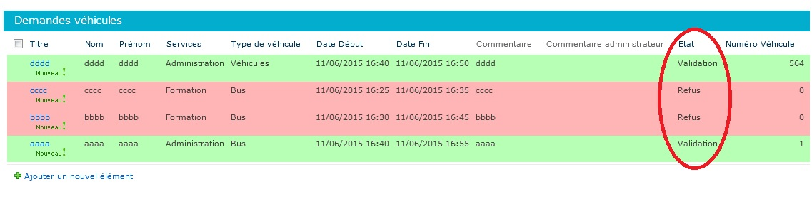

Le personnel de la STAS peut prendre certains types de véhicules comme des bus, des trams et voitures s’ils le souhaitent en demandant à l’avance par formulaire papier la date auquel celui-ci est nécessaire (pour une formation par exemple).
Le but est d’informatiser tous cela pour que le personnel puisse réserver à l’avance un véhicule plus rapidement et simplement sans attendre plusieurs jours la réponse. La personne pourra également voir les autres demandes des autres employés et voir en temps réel les différentes demandes. L’équipe qui est chargé de dire s’il est possible de prêter les véhicules ou pas sera également plus avantager grâce aux mails et suivie qu’il aura des demandes.
Cahier des charges du projet :
STAS - Cahier des chargesSTAS Compte Rendu : STAS Procédure de création d'un workflow de réservation véhicule
| Tâches | Temps |
|---|---|
| Création maquette | 1 jour |
| Étude du contexte | 0,5 jour |
| Installation des outils | 1 heure |
| Cahier des charges | 1 jour |
| Cahier des tests | 1 jour |
| AutoFormation | 4 jours |
| Liste | 3 jours |
| Flux de travail | 3 jours |
| Formulaire création et Personnalisation | 5 jours |
| Rédaction des procédures | 2 jurs |
| Établir le Planning | 1 heure |
| Effectuer les tests | 0,5 jour |
Le site :
Création de liste :

Designer :
Flux de Travail :
Formulaire :
Javascript :
